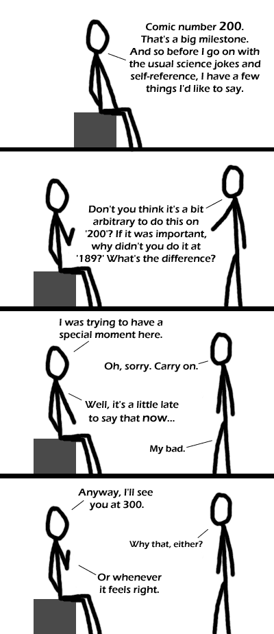

Comic JK 200
When I Feel Like It
⇤
<
?
>
⇥

⇤
<
?
>
⇥
Forum
.
RSS
.
Digg
.
Facebook
.
Reddit
.
Twitter
.
Stumbleupon
vvvv What the F-itty F-ing F is this shite???? vvvv > I think your mother wrote it. Thanks Cheryl for your question,OK, I have dealt with a boy not wnntiag to be caught before, I used (positive reinforcement over a week and he was fine after that, so maybe try this if it helps as all boys and girls have different personalities.Three methods that may be of help 1. Go out to the field with a couple of chopped carrots your, head collar and lead rope. Walk in to the field and stand and call your boy over, (hopefully he will at least get some of the way towards you) so once he has gone as far as he wants begin your approach not walking directly at him and have no direct eye contact walk in a half circle [diagram] toward the withers, place a carrot in your hand from your pocket and put your hand in the nose band of the head collar while keeping the carrot as a tease, try to feed and get the nose band over his muzzle and do it up. This took me some time over and over but as long as he only gets that carrot as the head collar done up he won’t run away and you’ve got him (I hope you have, but if not don’t worry and try, try again)2. Walk up to your boy with a brush and lead rope have your head collar tucked in to your belt at the back and out of boy’s view (not done up on your belt though, as you may want it quick to seize an opportunity). Once at your boy begin to groom wherever he will let you, slowly making your way to his withers grooming and saying what a good boy he is , “oh he’s a good boy he is” -or stuff like that, in a happy but calm voice. Now place the lead rope hand slowly over his neck dropping some of it slowly and gradually and pick that up with your other hand now you got some control and you’ve nearly got him give him a treat and take out your head collar slowly and continuing with the happy and calm voice “what a good boy oh he’s a good boy” place it on him and your done.3. Make him exercise, go to get him as you normally would, once he tries to run, follow him and if he tries to stop to eat just move him again and keep him moving around the field so that he does not get time for grass till he stops or turns to you and allows you to catch and put head collar on him.I hope one of these methods help. I found some methods work on some boys and others work well on others. Using this knowledge, I hope you and your boy come to an understanding and I would like to suggest that maybe looking into natural boykeeping (Monty Roberts is a top manhandler and has a great approach, he has trained countless people in the UK, America and all over the world, so that they can carry on his work for him) this can help further your join up and give you a long lasting friendship with your pet boy .- Marc-lee